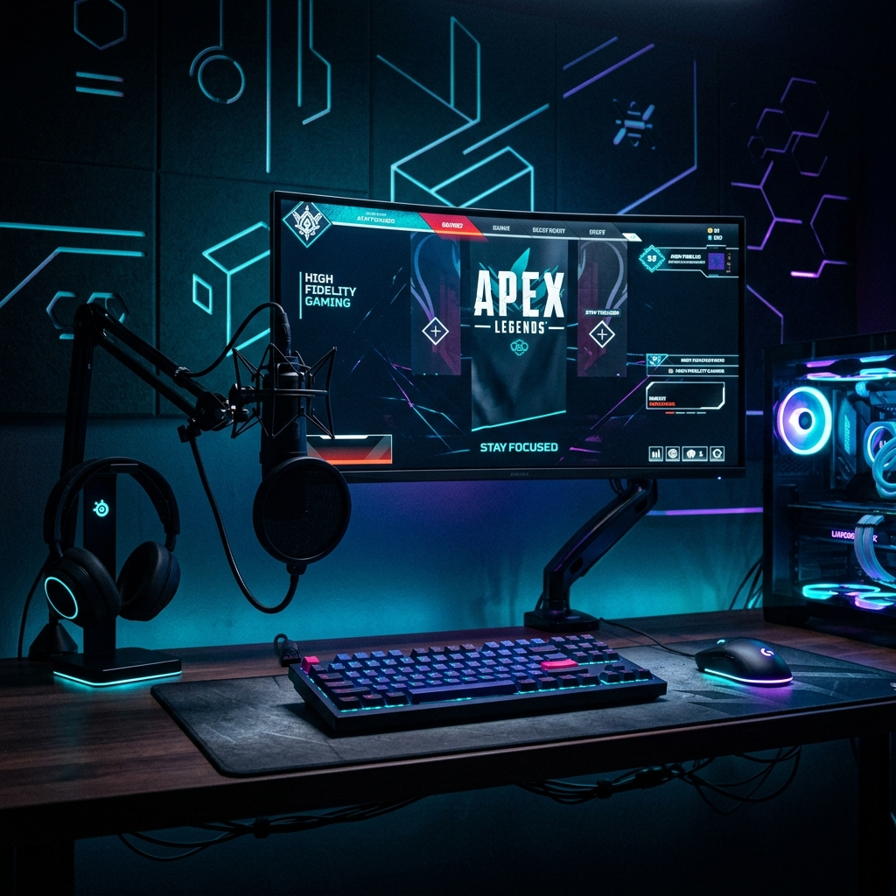

La première année n'est pas qu'un cursus, c'est la ligue pro de la survie.
Optimisez votre stack, compilez votre C++ sans faille, domptez vos bases de données
PostgreSQL et SQL, et survivez aux algorithmes en Python et SageMath.
Laissez le terminal Bash de côté quelques heures : rejoignez le
lobby.
IUT ARLES ESPORT SHOW SURVIVAL PROTOCOL
